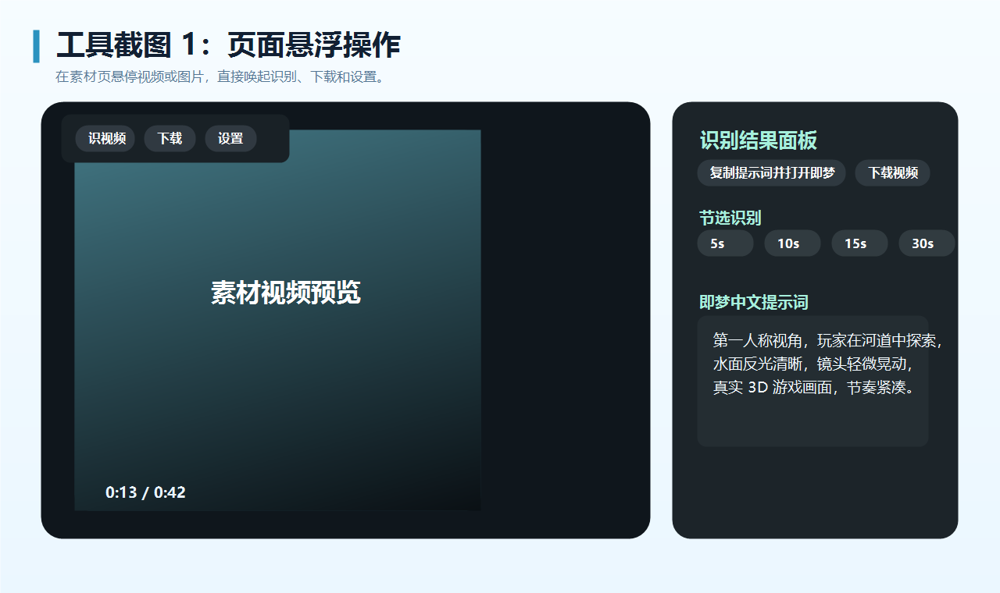

Online Image & Video Recognition 安装与使用图文教程
适用于 Chrome / Edge：加载本地扩展 → 配置 API → 识图/识视频 → 分镜编辑 → 导出 PNG / 可编辑 HTML。
Chrome 扩展 · v0.2.87
1 准备文件确认本地目录包含 manifest.json、background.js、content.js 等完整扩展文件。
2 加载扩展进入 chrome://extensions/，开启开发者模式，加载已解压目录。
3 配置 API分别配置识别模型和生图预览模型，可用 GPT、Gemini、豆包、即梦等接口。
4 网页识别悬停图片/视频，点击识图、识视频、下载或设置。
5 分镜编辑上传主体/场景/风格参考图，编辑镜头时间、画面描述和镜头语言。
6 导出交付生成脚本 PNG，或下载可编辑 HTML 继续替换图片。
1
安装扩展：加载本地文件夹
不要选择压缩包，也不要选择子目录；需要选择完整扩展根目录。
- 打开 Chrome / Edge 地址：chrome://extensions/
- 右上角开启“开发者模式”。
- 点击“加载已解压的扩展程序”。
- 选择扩展根目录：C:\Users\Administrator\Documents\NEW
- 看到 Online Image & Video Recognition 卡片后，建议固定到浏览器工具栏。
扩展程序
开发者模式
P
Online Image & Video Recognition
Reverse image and video prompts for Jimeng, plus direct video download shortcuts.
状态：已启用 · Service Worker 正常
已安装
2
配置 API：识别与生图分开设置
API Key 只保存在本机 Chrome storage；ChatGPT Plus 不等于 OpenAI API 额度。
- 在扩展卡片点击“详情 / 选项”，或在网页工具条点“设置”。
- 配置“识别模型”：用于识图、识视频、分镜反推、按图反推镜头字段。
- 配置“生图预览”：用于图片提示词预览图，可与识别模型使用不同 Key。
- 保存后，回到素材网页刷新页面再使用。
OpenAI / GPT
Gemini
豆包
即梦
OpenAI Compatible
- Gemini Base URL：https://generativelanguage.googleapis.com/v1beta
- OpenAI Base URL：https://api.openai.com/v1

3
网页操作：悬停后识图 / 识视频 / 下载
安装或更新后必须刷新目标网页，旧页面里的内容脚本不会自动更新。

- 打开素材网页，鼠标悬停到目标图片或视频上。
- 点击 识图：反推中文提示词，可编辑后复制，也可生图预览。
- 点击 识视频：从当前播放点抽关键帧，反推分镜脚本。
- 点击 下载：优先直接下载可访问 MP4；受限视频会提示原因。
- 识视频建议先播放 5–10 秒，让网页加载到目标清晰度。
5s
10s
15s
25s
30s
35s
更多：45s / 1min
4
识图结果：编辑提示词并生成预览
图片缩略图可点开查看或下载；提示词可以直接改成需要的主体、场景和风格。

- 点击图片工具条里的 识图。
- 查看中文提示词，直接在结果框里修改。
- 选择常用比例：9:16、16:9、3:4、4:3。
- 点击“生图预览”，使用设置页配置的生图 API。
- 复制最终提示词，可用于即梦等生成工具。
5
分镜编辑器：整理脚本和资产图
适合内部对接：全局参考、分镜图、资产图、镜头字段都能继续编辑。
- 在识视频结果中点击“打开分镜编辑器”。
- 全局参考：主体、场景、风格都可拖拽/点击上传图片；主体支持多图。
- 主体图上传后，会自动同步到匹配镜头的资产图。
- 每个镜头可编辑：镜头时间、画面描述、镜头语言。
- 分镜图 / 资产图支持拖拽上传、选中、删除；资产区有“删除选中资产”。
- 点击镜头时间旁的跳转，可回到原视频对应帧；“打开原页面”会尝试定位原视频。

6
导出交付：PNG 图片与可编辑 HTML
PNG 用于快速发图；HTML 用于后续继续修改文字、替换图片和二次交付。
全局参考图
完整缩略图
完整缩略图
分镜图 / 资产图
- 点击 生成脚本图片：直接下载完整 PNG，参考图和镜头图会完整展示。
- 点击 下载可编辑文件：下载本地 HTML。
- 打开下载的 HTML 后，可以继续编辑文字。
- HTML 内图片支持“替换图片 / 上传图片 / 删除”。
- 修改完成后，点击 HTML 顶部“下载当前修改版 HTML”。
Service Worker 无效在 chrome://extensions/ 点击扩展卡片的刷新按钮；若仍无效，点“错误”查看具体报错。
页面没出现按钮先刷新目标网页，确认扩展开启，再悬停到真实图片或视频区域。
API 额度不足更换 API Key、模型或服务商；ChatGPT Plus 与 OpenAI API 额度不是同一套。
视频下载失败blob、m3u8、DRM、加密分片不一定能直接保存为普通 MP4。
↻
更新扩展：每次改完代码后这样操作
这一步很关键，否则旧页面可能还在运行旧脚本。
- 打开 chrome://extensions/。
- 找到 Online Image & Video Recognition，点击卡片右下或右上角“刷新”。
- 回到目标素材网页，按 Ctrl + R 刷新页面。
- 重新悬停图片或视频再操作。